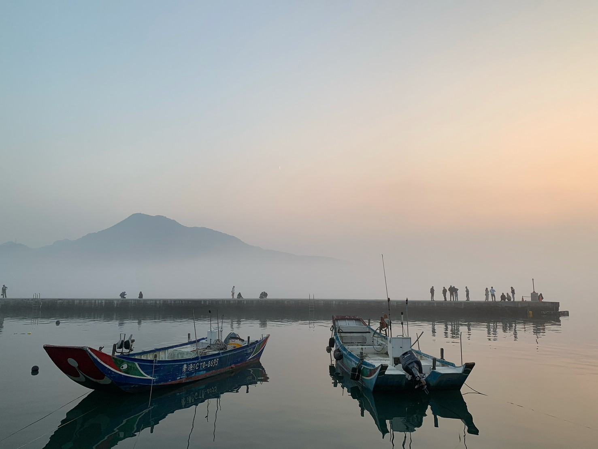

淡水的故事
淡水區（臺灣話：Tām-tsuí-khu），舊稱「滬尾」，後稱「淡水」，得名自淡水河，前身「淡水鎮」，位於臺灣新北市西北部，淡水河下游北岸，北與東北鄰三芝區，西北濱臺灣海峽，西南隔淡水河與八里區為界，東南鄰臺北市北投區。在歷史上曾為西班牙登陸臺灣，並在臺灣北部建立海上貿易中繼基地的起點。
早期淡水區因港口而發展興盛，市街區一帶設有許多具有歷史文化意義之廟宇。清末淡水商港開港後，成為臺灣的重要國際港口，吸引大量外籍商行、傳教士進入淡水區開發，並且設有不少西洋建築，使其留有特殊的異國風情的文化景觀[2]。日治時期後因自來水設施的建置，淡水線的開通及各項公共建設的推動，呈現異於以往的現代化景觀[3]。而在1990年代以後，隨著淡海新市鎮的開發，各項交通建設逐步推動，也促使了淡水區成為臺北都會區外圍的新興人口成長地區[4